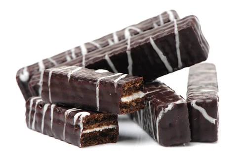

Recetas
Barritas Oreo
Ingredientes
- 100g. harina de avena tamizada
- 15-20g. cacao negro alcalino (el de las Oreo)
- 120g. crema de anacardos
- Cobertura: chocolate blanco

Preparación
- Tan fácil como mezclar muy bien todos los ingredientes de la base hasta formar una masa que irá en el fondo del molde (previamente coloca papel vegetal en el molde para desmoldar).
- Una vez lo tengas y dejes listos, funde el chocolate (que también puede ser negro o el que quisieras. Unos 100g) y cubre todo.
- Lleva al frigorífico o congelador y ya lo tienes.